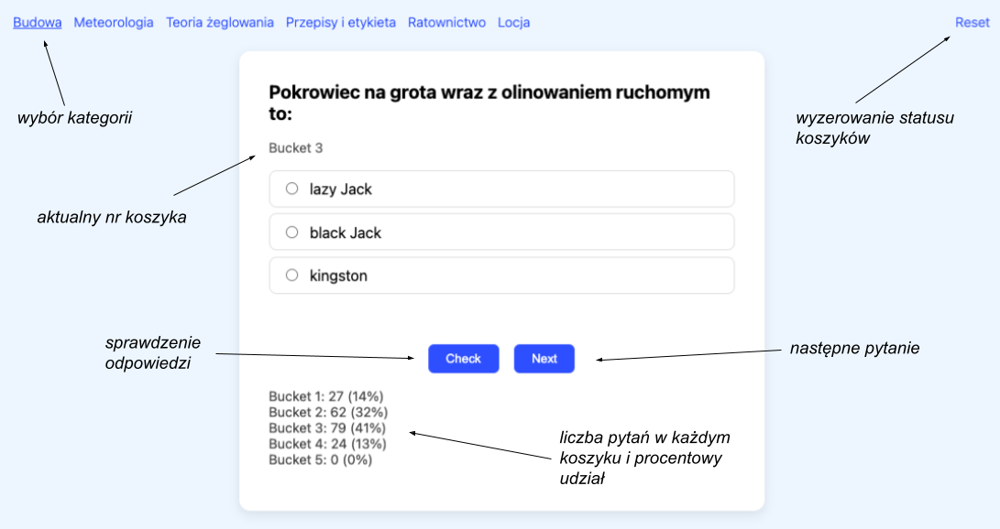

Wstęp
Jest to prosta aplikacja o roboczej nazwie "Fiszki". Jak sama nazwa wskazuje służy do powtarzania materiału tzw. metodą fiszek.
Zakres materiału
W tym konkretnym wypadku aplikacja służy do powtarzania wiedzy do egzaminu teoretycznego na patent Żeglarza Jachtowego z następujących zagadnień:
- Budowa jachtu
- Teoria żeglowania
- Locja
- Przepisy i etykieta
- Ratownictwo
- Meteorologia
Łącznie w bazie znajduje się 771 pytań.
Jak to działa?
W górnym menu znajdują się kategorie pytań. Po kliknięciu pojawia się karta z losowym pytaniem. Po zaznaczeniu odpowiedzi trzeba nacisnąć przycisk "CHECK", a następnie "NEXT", aby przejść do następnego pytania.

O co chodzi z koszykami?
Na początku wszystkie pytania w ramach każdej kategorii znajdują się w tzw. 1-szym koszyku ("bucket 1"). Kiedy odpowiemy poprawnie, to wtedy przenoszą się do kolejnego koszyka. Jeśli odpowiemy źle, to pytanie wraca do poprzedniego koszyka. Naszym celem jest przeniesienie wszystkich pytań do ostatniego 5-tego koszyka, co oznacza 5 poprawnych odpowiedzi na każde pytanie.

Ta metoda nauki nazywa się "spaced repetition" i jak sam nazwa wskazuje polega na powtarzaniu materiału kilka razy w oddzielonych od siebie sesjach. Dzięki temu lepiej i trwalej zapamiętamy informację, niż odpowiadając poprawnie na pytanie tylko jeden raz.
Na dole karty z pytanim znajduje się stan koszyków, czyli ile obecnie pytań znajduje się w każdym z koszyków i jaki to jest procentowo udział w stosunku do wszystkich pytań w ramach konkretnej kategorii.
Jak losowane są kolejne pytania?
Następne pytanie jest losowane wg następującej proporcji:
| Koszyk | Udział (%) |
|---|---|
| Koszyk 1 | 50 % |
| Koszyk 2 | 25 % |
| Koszyk 3 | 15 % |
| Koszyk 4 | 7 % |
| Koszyk 5 | 3 % |
Dodatkowo są stosowane wagi do tych współczynników; w tym wypadku jest to liczba pytań w każdym koszyku. Dzięki temu w pierwszej kolejności otrzymamy pytania z niższych koszyków a nie wyższych. Również za każdym razem kolejność wyświetlania odpowiedzi jest inna, więc trzeba uważać, którą się zaznacza ;)
Status postępów nauki
Aplikacja przechowuje informacje o naszych postępach lokalnie w pamięci przeglądarki. Dzięki temu nawet, jeśli zamkniemy zakładkę, wyłączymy przeglądarkę, odetnie nas od internetu, czy wyłączymy komputer, to po wejściu ponownie na stronę aplikacji (uwaga: z tej samej przeglądarki), to zobaczymy zapisany status naszych postępów. W prawym górnym rogu znajduje się przycisk "Reset", który czyści wszystkie zapisane dane i powoduje powrót do sytuacji startowej, gdzie wszystkie pytania znajdują się w koszyku nr 1.
Technikalia
Aplikacja została w 100% wygenerowana przez AI (model o3) jako narzędzie pomagające w nauce na egzamin żeglarski.
Każda zakładka z pytaniami w ramach danej kategorii to tak naprawdę osobny plik .html zawierający całą logikę aplikacji. Jest to tzw. "single page app". Pliki ze strony można ściągnąć na swój komputer i uruchomić lokalnie w dowolnej przeglądarce (będzie działać bez dostępu do internetu).
Pełny kod aplikacji:
github.com/wojciechkarcz/fiszki
Twórca aplikacji:
Wojciech Karcz -
wojciechkarcz.pl